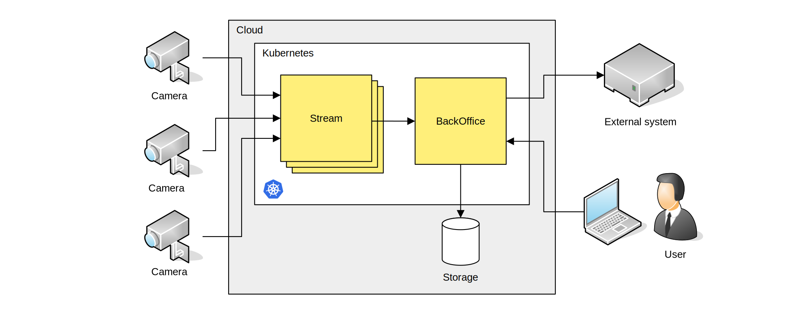
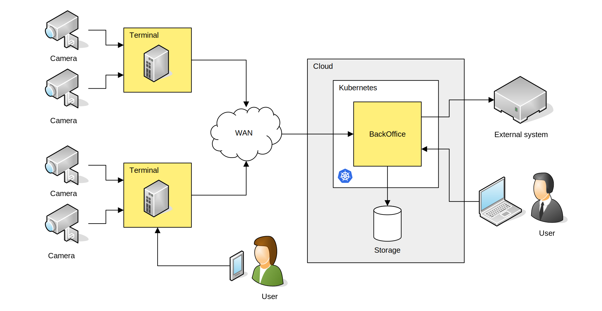
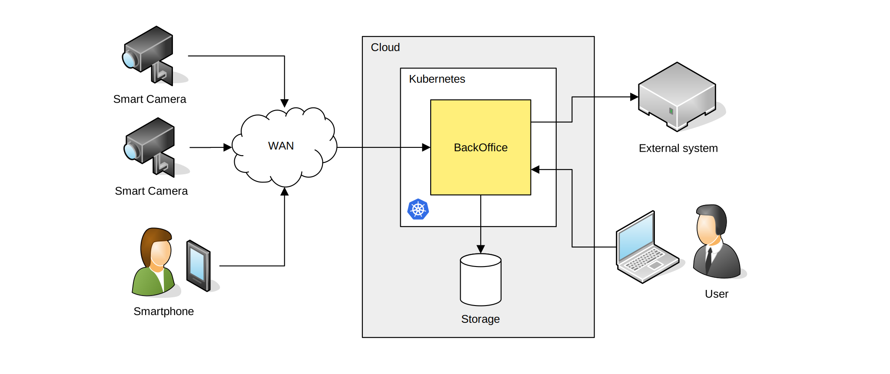

3. Budowa¶
System może pracować w różnych konfiguracjach, w których kluczowy element przetwarzania – analiza strumienia wideo – realizowane jest w różnych miejscach. Użytkownik może wybrać najbardziej dogodną dla siebie konfigurację spośród opisanych w następnych punktach.
3.1. Przetwarzanie w chmurze¶
W takiej konfiguracji w miejscu detekcji (na drodze) montowane są kamery dostarczające strumień wideo do systemu centralnego. Kamery te przystosowane są do detekcji i identyfikacji pojazdów (typ: kamera ANPR) jednak ze względu na to, że nie analizują wideo muszą być podłączone do systemu centralnego relatywnie dobrym i szerokim łączem komunikacyjnym – o przepustowości rzędu kilku Mb/s.
Strumień z kamery trafia do aplikacji działającej w chmurze NeuroCar Stream VI – dla każdej kamery uruchomiona jest oddzielna instancja silnika stream, który analizuje strumień i przesyła dalej (do BackOffice) wyłącznie informacje o wykrytych pojazdach (rekord danych VehicleTrace). Dostęp do danych pomiarowych możliwy jest wyłącznie poprzez BackOffice; albo poprzez odpowiednią aplikację GUI albo poprzez rozsyłanie powiadomień.
Dzięki wykorzystaniu technologii Kubernetes rozwiązanie takie można uruchomić praktycznie w każdej chmurze (albo w prywatnej → on premise, albo u zewnętrznego dostawcy usług chmurowych). Ponadto bardzo łatwo jest skalowanie – zwiększenie liczby kamer realizuje się wyłącznie przez dodanie węzłów roboczych w klastrze.
3.2. Przetwarzanie lokalne¶
W takiej konfiguracji w miejscu detekcji (na drodze) montowane są kamery dostarczające strumień wideo, a także jednostki obliczeniowe - Terminale - dokonujące przetworzenia strumienia wideo „na miejscu”. Terminal wyposażony jest w przemysłowy komputer obliczeniowy CPU o odpowiedniej mocy, lokalny nośnik danych (np. dysk SSD) pozwalający na buforowanie danych oraz urządzenia komunikacyjne (np. modem) pozwalające na skomunikowanie się z systemem centralnym. Terminal może także zbierać inne dane takie jak informacje środowiskowe np. temperatura, napięcie zasilania itp. Komputer CPU, sprzęt sieciowy oraz układ zasilania umieszczane są w szafie teletechnicznej montowanej w pobliżu miejsca detekcji. Sygnał kamer doprowadzany jest do szafy połączeniem cyfrowym (kabel UTP, światłowód).
Przetwarzanie lokalne pozwala na znaczące zredukowanie rozmiaru danych, które wysyłane są za pośrednictwem sieci WAN. Terminal wysyła do systemu BackOffice wyłącznie wyselekcjonowane informacje o wykrytych pojazdach oraz dane statusowe. Tak skonfigurowany system jest odporny na zaburzenia w sieci transmisji danych – przerwa w transmisji nie powoduje utraty informacji o pojazdach. Zbuforowane dane mogą czekać na dostarczenie do centrali nawet wiele dni.
Dodatkową zaletą przetwarzania lokalnego jest możliwość efektywnej fuzji danych z wielu sensorów, np. przetwarzanie strumienia z wielu kamer oraz detekcji ze sterownika pętli indukcyjnych. W takiej sytuacji właśnie Terminal odpowiedzialny jest za właściwe podłączenie danych z sensorów i uformowanie rekordu pomiarowego reprezentującego pojedynczy pojazd.
Ważną cechą przetwarzania lokalnego jest możliwość bezpośredniej pracy użytkownika na terminalu, bez pośrednictwa systemu centralnego. Przez to użytkownik na dostęp do danych natychmiast – bez potencjalnego opóźnienia generowanego przez łącza transmisji danych. Do pracy z terminalem użytkownik musi wykorzystać dodatkowy komputer i przeglądarkę internetową.
Wszystkie dane generowane przez wiele terminali trafiają ostatecznie do systemu centralnego BackOffice. Z poziomu tego systemu użytkownik (ew. system zewnętrzny) ma dostęp do kompletu danych, zarówno bieżących jak i archiwalnych.
3.3. Przetwarzanie w kamerze¶
W takiej konfiguracji w miejscu detekcji (na drodze) montowane są inteligentne kamery, wyposażone w zmotoryzowany obiektyw oraz wbudowany promiennik podczerwieni, zaopatrzone we wbudowany komputer jednoukładowy przetwarzający strumień wideo. Dodatkowo, inteligentna kamera ma wbudowany nośnik danych (dysk SSD) pozwalający na buforowanie pomiarów, oraz modem – wszystko w jednej zwartej obudowie.
Inteligentna kamera funkcjonalnie odpowiada konfiguracji terminala jest jednak bardziej zwarta i mniejsza, przez to łatwiejsza w instalacji, uruchomieniu i konserwacji. Wadą inteligentnej kamery jest bardzo ograniczona możliwość tworzenia wielosensorycznych układów pomiarowych co powoduje, że najczęściej wykorzystywana jest wówczas, gdy użytkownik potrzebuje wyłącznie funkcjonalności identyfikacji pojazdów „z jednego ujęcia”. Zaletą inteligentnej kamery jest możliwość przetwarzania obrazów bez zniekształceń (np. bez kompresji) co wynika z faktu, że wbudowany w kamerze procesor CPU jest fizycznie zintegrowany z torem wizyjnym.
Innym urządzeniem realizującym koncepcję natychmiastowego przetwarzania jest smartphone będący jednocześnie kamerą oraz jednostką przetwarzania. Telefon taki, podobnie jak inteligentna kamera, analizuje strumień video, wykrywa pojazdy, identyfikuje je i przesyła wynik od razu do systemu centralnego.
3.4. Przetwarzanie hybrydowe¶
W takiej konfiguracji, w ramach jednego systemu może byc wykorzystywane przetwarzanie w chmurze, przetwarzanie lokalne oraz inteligentne kamery. Użytkownik otrzymuje do dyspozycji – z poziomu systemu centralnego – zunifikowany, kompletny zestaw danych pomiarowych ze wszystkich urządzeń.